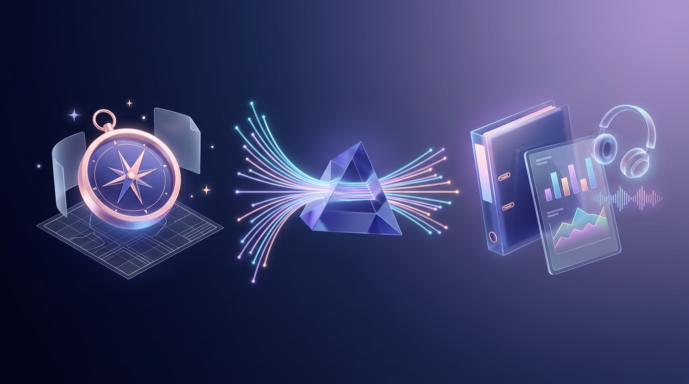
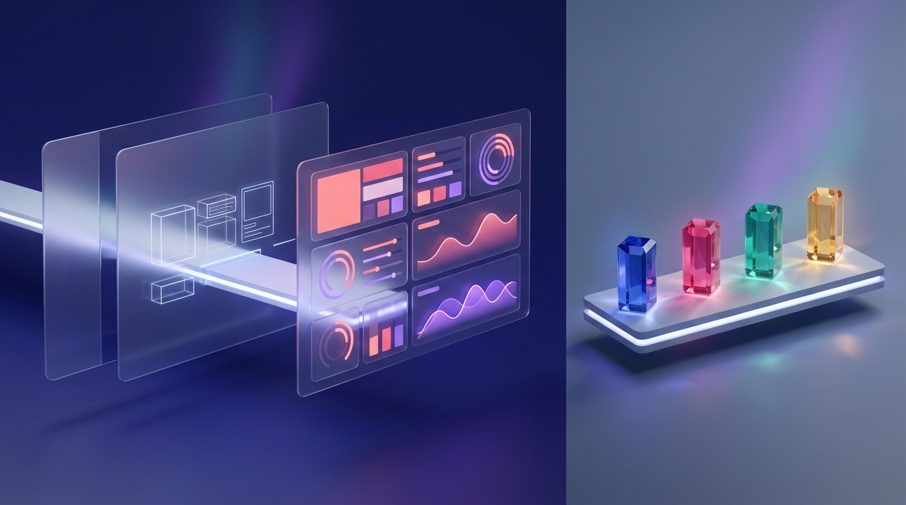

The complete visual handbook to Google Gemini's flagship power trio—autonomous multi-source research reports, split-screen writing & live interactive apps, and custom AI teammates.
Treating Google Gemini (gemini.google.com) like a simple question-and-answer box leaves 80% of its power untouched. Inside that single interface live three interconnected studios—Deep Research, Canvas, and Custom Gems—that act as your personal research agency, interactive workshop, and specialist staff.
Your Google AI Ultra membership upgrades every layer of gemini.google.com and the Gemini mobile app—giving you priority access to Google's deepest reasoning engine, highest daily Deep Research ceilings, massive memory, and background automation.
| Model / Mode | Response Speed | Best Use Cases & Why You Pick It |
|---|---|---|
| Flash / Fast | Instant (1–2s) | Quick translations, rapid brainstorming lists, summarizing short emails, and fast everyday mobile voice checks. |
| Pro (Workhorse) | Fast (3–8s) | Your daily driver for Canvas writing, vibe-coding interactive dashboards, analyzing spreadsheets, and running Custom Gems. |
| Deep Think AI ULTRA EXCLUSIVE |
Deliberate (30s–3m) | Explores parallel reasoning paths and self-verifies logic before answering. Built for hard math proofs, system architecture trade-offs, subtle code bugs, and multi-constraint strategy. |
| Deep Research HIGHEST ULTRA QUOTA |
Autonomous (3–8m) | Multi-step agent that browses hundreds of websites + your Drive/Gmail and compiles an exhaustive, cited multi-page report in the background. |
Drop entire 1,500-page PDF bundles, multi-tab financial workbooks, hour-long videos, or whole code repositories into a single prompt without chopping files into pieces.
Open the Gemini phone app, select any Custom Gem, tap Live, and turn on your camera or screen share to brainstorm out loud while pointing at physical objects or slides.
Put prompts on autopilot! Say: "Every weekday at 7:30 AM, check @Calendar and unread @Gmail VIP threads and send me a 5-bullet prep brief." Manage anytime in Settings → Scheduled actions.
Once you activate Canvas or open a Deep Research report, Gemini transforms from a single column into a full dual-pane production studio. Master these 7 numbered controls to fly through any project.
Q3_Metrics.pdf from @Drive. Opened interactive view in Canvas →
+ Grounding Menu: Attach local PDFs, CSVs, code folders, or pull live files straight from Google Drive, Docs, and Gmail.Create Transformation Menu: Convert any report or text inside Canvas into an interactive Web Page, Infographic, Quiz, Flashcards, or Audio Overview.g.co/gemini/share link to your live app, or export formatted reports with citations straight into Google Docs.
Standard AI search skims five snippets and guesses an answer in three seconds. Gemini Deep Research works like a dedicated consulting analyst: it designs a multi-point plan, browses hundreds of pages iteratively, cross-checks your private files, and writes a cited executive report while you do other work.

Click Deep Research, then hit + to attach your own PDFs, spreadsheets, or Google Drive docs (or invoke @Gmail / @Drive). Gemini cross-references your internal numbers against live public competitors!
Before browsing a single URL, Gemini presents a numbered Research Plan. Click Edit plan to cut basic filler, add exact rival names, or demand pricing tables—then click Start research.
Watch Gemini's live reasoning drawer as it searches, spots gaps, and runs follow-up queries over 3–8 minutes—or switch tabs freely! Every claim in the finished report carries clickable inline source links.
"Remove introductory definitions. Add a head-to-head table comparing enterprise SSO pricing, SOC2 Type II status, and real user complaints from Reddit/Hacker News in 2025–2026." That single tweak turns a B+ essay into a C-suite decision brief.
Great Deep Research prompts read like an assignment to a sharp human chief of staff: tell Gemini what decision you are making, what private context you attached, and what evidence counts.
We are deciding whether to expand our B2B SaaS analytics platform into Germany and the UK in Q1.
Cross-reference our attached 2026_Product_Spec.pdf and @Drive Pricing_Tiers
against the top 6 local European competitors serving 50–500 employee companies.
Prioritize 2025–2026 primary pricing pages, EU data-residency regulations, G2/Reddit buyer critiques, and public case studies; flag any unverified estimates explicitly.
Deliver an executive recommendation, a feature-and-pricing comparison matrix, top 5 regulatory blockers, and a 90-day go-to-market checklist.
| Post-Report Action | Where to Click | What Gemini Builds Instantly |
|---|---|---|
| 1. Export to Google Docs | Bottom bar → Export to Docs |
Creates a formatted Google Doc in your Drive with clean H1/H2 headings, native tables, and preserved clickable source footnotes. |
| 2. Podcast Audio Overview | Top right → Audio Overview |
Two AI hosts synthesize your 15-page dossier into a lively, downloadable 6–8 minute banter-filled briefing you can listen to on a walk. |
| 3. Visual Infographic | Canvas → Create → Infographic |
Transforms dense findings into a vibrant, scannable visual poster with callout stats, timelines, icons, and color-coded takeaways. |
| 4. Interactive Web Dashboard | Canvas → Create → Web Page |
Generates a live multi-tab HTML/React microsite with filterable comparison cards, interactive charts, and a shareable URL! |
| 5. Mastery Quiz & Flashcards | Canvas → Create → Quiz |
Builds an interactive multiple-choice test with instant answer explanations, hints, and score tracking—ideal for certification or pitch prep. |
Standard chat forces you to regenerate an entire 1,500-word draft just to soften paragraph four. Selecting the Canvas pill opens a persistent side-by-side studio where you and Gemini edit living documents—or build working web software—in real time.

← / → version buttons at the top of Canvas to roll back any code or prose experiment in one click."clean slate-and-indigo executive dashboard with large KPI cards and responsive charts").
Here is the most underrated feature in all of Google Gemini: Canvas doesn't just build static calculators—clicking ✨ Add Gemini Features embeds live Gemini intelligence inside the web app you just built, with zero API keys or billing setup!
Build a flashcard simulator for your sales team where reps type their pitch and click an embedded AI "Score & Push Back" button.
Turn a family itinerary into an interactive map card app with a live "Rainy-Day Backup" button that rewrites any afternoon on the fly.
Pair revenue sliders with an embedded "Draft CFO Summary" button that writes an executive memo from whatever slider values you pick.
| Export / Share Path | When & How to Use It |
|---|---|
| Public Share Link ( g.co/gemini/share/...) |
Click Share → Share in the top-right corner of Canvas. Anyone who opens your link sees the live interactive app, quiz, or infographic on desktop or mobile—and can even fork their own copy! |
| Google Docs / Colab / Classroom | Written drafts export cleanly to Google Docs; Python scripts open one-click in Google Colab; educators can attach interactive quizzes directly to Google Classroom. |
| Graduate to Google Antigravity | When a single-file Canvas prototype proves popular and needs user login, a database, custom backend APIs, or your own domain, copy the code into Google Antigravity to ship a full-stack app. |
Any time you catch yourself pasting the same role description, style rules, or reference files twice, stop and build a Custom Gem. Open Gems in the left rail, click + New Gem, and turn a repeatable prompt into a one-click specialist on web and mobile.
You are our Principal Product Marketing Editor—sharp, empathetic, allergic to corporate buzzwords.
Whenever I paste rough launch notes or a feature spec, critique weak positioning first, then rewrite it into customer-ready copy.
Strictly follow tone, banned jargon, and buyer personas inside the attached Drive doc Brand_Voice_2026 and cross-check live tier limits in Pricing_Sheet.
Always output: (1) a 3-bullet messaging diagnosis, (2) Headline + Subhead options, and (3) a tight 120-word customer email.
Don't want to write four paragraphs from scratch? Type two rough sentences into the Gem Instructions box and click the ✨ Use Gemini to re-write instructions wand icon at the bottom—Gemini expands it into a structured, comprehensive system prompt automatically!
Under Knowledge, upload up to 10 static files (PDFs, CSVs, code) or link Google Docs & Sheets from Drive. Linking native Drive files is a superpower: when you update your Google Doc next month, your Gem reads the updated truth automatically!
@Workspace Extensions & Skills
Gems can reach into your live Google ecosystem whenever you enable Connected Apps. Reference @Gmail, @Google Calendar, @Google Drive, @Google Tasks, or @Google Keep right inside your Gem's instructions—or invoke modular / Skills across Workspace sidebars in Docs and Gmail—so your Gem acts on today's schedule and inbox rather than static templates.
Test-drive the full suite in ten minutes with these six battle-tested blueprints—two for Deep Research, two for Canvas, and two reusable Custom Gems.
| Recipe & Tool | Setup / Attachments | Copy-Paste Prompt or Gem Blueprint |
|---|---|---|
1. Major Purchase / Vendor MatrixDeep Research |
Toggle Deep Research; edit Plan to cut fluff before starting. | "Compare the top 5 [mesh Wi-Fi systems / CRM tools] for [3,200 sq ft brick home / 25-person agency] in 2026. Separate paid affiliate hype from long-term owner complaints on Reddit/forums. Output a spec + real-world reliability table and clear #1 pick." |
2. Internal Deck vs. Live Market AuditDeep Research |
Attach your strategy PDF + @Drive roadmap. |
"Audit our attached 2026 pitch deck against live competitor launches, pricing changes, and market benchmarks from the past 6 months. Highlight 3 claims in our deck that are now outdated and cite stronger replacement stats." |
3. Executive What-If SimulatorCanvas + AI |
Toggle Canvas; click ✨ Add Gemini Features after render. | "Build a sleek dark-mode SaaS runway & pricing simulator with interactive sliders for Monthly Leads, Conversion %, Price, and Churn, live 12-month charts, and an AI button that writes a 4-bullet risk memo from the current sliders." |
4. Transcript → Infographic & QuizCanvas Create |
Drop messy meeting notes, lecture PDF, or report into Canvas. | Once open in Canvas, click top-right Create → Infographic for a one-page visual summary poster, then click Create → Quiz to generate an interactive 10-question team readiness check with hints! |
5. "Ruthless Clarity Editor"Custom Gem |
Knowledge: Link your team's Google Doc style guide + 3 best articles. | Instructions: "Act as an executive editor. Cut passive voice, throat-clearing intros, and clichés by 30% while keeping warmth. Output: (1) Polished version, (2) 3 bullet notes explaining your biggest cuts." |
6. "Chief of Staff Morning Brief"Gem + Schedule |
Enable @Calendar, @Gmail, and @Tasks; set 7:30 AM weekday schedule. |
Instructions: "Check today's @Google Calendar, unread VIP threads in @Gmail, and overdue @Google Tasks. Deliver a 1-minute morning brief: Top 3 priorities, meeting prep landmines, and emails needing a reply before noon." |
Inside your Google AI Ultra creative suite, Google Docs acts as the universal baton. Watch how a single question flows across five Google tools in twenty minutes to produce an entire executive launch kit.
| Starting Asset | Exact Handoff Action | Destination & Instant Payoff |
|---|---|---|
| Deep Research Dossier | Export to Docs → Add Source |
NotebookLM: Grounded Mind Map, Slide Deck & team Q&A notebook. |
| Google Doc Strategy Brief | Type @DocName in prompt |
Google Vids: Scripted storyboard video with voiceover & Veo B-roll. |
| Winning Canvas Prototype | Copy from Code tab |
Google Antigravity: Multi-file full-stack app, auth & cloud deploy. |
Keep this reference page handy—every quirk across Deep Research, Canvas, and Custom Gems has a fast, predictable 10-second fix.
| Symptom / Problem | Root Cause & 10-Second Fix |
|---|---|
| Deep Research report feels generic or surface-level | Clicked Start research without editing the plan. Always click Edit plan to cut intro definitions and demand specific 2025–2026 metrics, competitors, and Markdown comparison tables. |
| Canvas rewrote my whole draft when I wanted 1 sentence changed | Typed the edit in the main left chat panel. Instead, highlight the exact sentence inside the right-hand Canvas document and use the small floating inline prompt box! |
| Canvas interactive app preview is blank or a button fails | Minor JS/React state bug. Click Fix error if prompted, or toggle to Code, highlight the broken handler, and ask: "Fix this click state bug without altering the layout." |
| Custom Gem ignores one of my uploaded Knowledge files | Vague routing across multiple files. Name each file explicitly inside your Gem's Instructions (e.g., "Consult Pricing_2026.gsheet before quoting any tier"). |
| Gem says it can't read my latest Gmail or Calendar | Workspace extension disabled or unprompted. Enable Google Workspace under Gemini Connected Apps, and include explicit @Gmail or @Google Calendar tags in the prompt. |
| Shared Canvas link exposes internal figures publicly | Public g.co/gemini/share links include everything rendered inside that Canvas! Replace sensitive client names with dummy data before sharing publicly, or export to permissioned Google Docs. |
| Hard math, logic, or architecture prompt hallucinates edge cases | Used fast conversational mode on a deep deduction problem. Switch the top model picker to Deep Think (AI Ultra) so Gemini verifies intermediate logic before replying. |
Create in Canvas for instant Web Apps & Quizzes.@Drive + Live Web inside Deep Research.@Calendar + @Gmail autopilot!https://gemini.google.com, toggle Deep Research, attach one Google Drive doc, refine the proposed Research Plan, and once the report lands—open it in Canvas and click Create → Web Page!